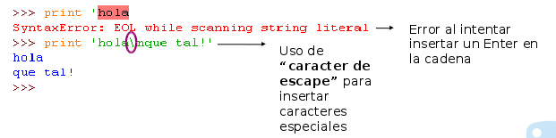

Seminario de Lenguajes - Python
Cursada 2019
Temario
- Origen del lenguaje
- El proceso de ejecución
- Características del lenguaje
- Tipos básicos
- Estructuras de control
Origen del lenguaje
- Desarrollado por Guido_Van_Rossum a finales de los años 80 en el centro de investigación en Matematicas CWI en Holanda.
- El nombre proviene del grupo de cómicos ingleses "Monty_Python".
- Fué creado para suceder al lenguaje de programación ABC.
- En la primera versión ya estaban presentes clases con herencia, manejo de excepciones, funciones, y los tipos medulares: list, dict, str. Además ya aparecía un sistema de módulos adoptado del lenguaje Modula-3
Python en la actualidad
Es un lenguaje que en los últimos años ha crecido de manera constante.
¿Quiénes usan Python?
Muchas organizaciones han utilizado y utilizan Python para:
- Programar tareas de administración de sistemas. Ej. En distribuciones Linux.
- Producción de efectos especiales de películas. Ej. empresa: Industrial Light & Magic.
- En sistemas informáticos de la NASA.
- Desarrollo web.
- Realización de juegos de computadora.
Battelfield 2 o civilization IV
AGREGAR DE LA PRESENTACION DE SOFY
- En la bioinformática.
- Enseñanza de la programación, etc
Características generales
- Es un lenguaje de alto nivel, fácil de aprender. Muy expresivo y legible.
- Es interpretado.
- Multiplataforma.
- Python es multiparadigma, puede usarse como lenguaje imperativo procedimental o como lenguaje orientado a objetos. Además tiene características de los lenguajes funcionales.
- Posee una sintáxis elegante y tipado dinámico y fuerte.
- Tiene un eficiente manejo de estructura de datos de alto nivel.
¿Cómo se ejecuta un programa Python?
Existen dos formas de ejecutar código Python:
- Utilizando la consola: Donde se utiliza un modo interactivo y obtener una respuesta por cada línea.
- Utilizando un IDE como en cualquier otro lenguaje: Se escribe el código en un archivo de texto y luego se invoca al intérprete para que lo ejecute.
Usando un IDE
Usando un IDE
Se debe configurar el Geany colocando la ruta dónde se encuentra el intérprete Python
Sintaxis Básica
Variables y Tipos de Datos
Variables en Python
- El siguiente es un pequeño programa escrito en Python
x = 21
print (x)
x='hola!'
print (x + '¿Cómo están?')
- ¿Algo que llame la atención respecto a otros lenguajes vistos?
- ¿Qué?
Debería notarse que no hay una estructura de programa (tipo program.. begin.. end)
Debería notarse que las variables no se declaran
Debería notarse que las variables pueden cambiar de tipo
Variables en Python
- NO hay declaración de variables
- Las variables se crean dinámicamente cuando se les asigna un valor
- Las variables pueden cambiar de tipo a lo largo del programa
- Python cuenta con tipado dinámico
- Probemos el código
Variables en Python
- Veamos el siguiente código
texto_1 = 'Estamos haciendo'
print (Texto_1 + 'diferentes pruebas')
texto.2= 'Continuamos probando...'
print (texto.2)
- ¿Se puede observar algo en este código?
- ¿Es correcto o pensamos que puede haber algún error?
- ¿Lo probamos?
Deberían darse cuenta que es distinto texto_1 que Texto_1
Deberían darse cuenta que no se puede tomar como nombre de variable texto.2
Variables en Python
- Python hace diferencia entre mayúsulas y minúsculas. La variable texto_1 es distinta de variable Texto_1
- Los nombre de las variables:
- Pueden contener letras, dígitos y “_”.
- Siempre deben comenzar con letra.
Variables en Python
- Se pueden hacer varias asignaciones en una misma línea.
a=b=c=1
print (a, b, c)
1 1 1
x, y, z = 3, 5, 7
print (x, y, z)
3 5 7
Variables en Python
Algunas convenciones respecto al nombre de las variables:
- Si es nombre compuesto usar "_".
monto_adeudado = 100
- Para que no haya confusión, si se usa la letra "l", mejor usar "L". Igual para la letra "O" usar "o", se pueden confundir con unos y ceros.
Guías de estilo de codificación
"El código es leído muchas más veces de lo que es escrito"
Guido Van Roussen"
- "La legibilidad cuenta" (PEP20 )
- La PEP8 es una guía de estilo para código Python.
REVISAR VERSIONES (las peps están bien.. esto me parece medio complejo meterlo aca.. la idea de
esto era más bien que se acostumbren a poner comentarios..)
HABLAR /PREVIO PROBAR) http://www.sphinx-doc.org/en/master/
Comentarios en Python
- Para insertar un comentario dentro del programa se utiliza el símbolo ‘#’.
- Si el comentario ocupa varias líneas, debe repetirse ‘#’ en cada línea.
- Tratar de no comentar en la misma línea, trae confusión.
- Si se hace, separarlo bien y que no sea para comentar cosas obvias.
- Ej.
x = x + 1 # Incrementa x
Tipos de datos
- Básicos
- Números
- Enteros
- Flotantes
- Complejos
- Booleanos
- Cadenas de texto
- Colecciones (Estructuras de datos)
- Listas
- Tuplas
- Conjuntos
- Diccionarios
Tipos Básicos
- Observemos el siguiente código
numero_1 = 2147483647
numero_2 = 0o27
numero_3 = 0x17
- ¿De qué tipo son estas variables y qué valores contienen?
- Lo probamos?
Tipos Básicos
- Son todas de tipo entero.
- Difieren en la forma de expresar el valor
- Si lo expresamos como un octal, debemos anteponer un 0o (cero y letra o)
- Si lo expresamos como un hexadecimal, debemos anteponer un 0x
Tipos Básicos
var_real1= 0.2703
var_real2= 0.1e-3
- Son variables del tipo float que representan los valores reales.
Sobre conversiones
- La división entre enteros redondea para abajo en Python 2.x, en Python 3.x devuelve un float.
- >>> i= 7/2 da como resultado 3 - Python 2.x
- >>> i= 7/2 da como resultado 3.5 - Python 3.x
- Una expresión con números mixtos se convierte a flotante.
- >>> i= 7.5/2 da como resultado 3.75
- Existen funciones que realizan conversiones explicitas, como ser float(), int(), str() y long().
- >>> i= str(7.5) da como resultado ‘7.5’
Operadores aritméticos
- Analicemos las expresiones aritméticas de las siguientes sentencias print
x = 13
print(x // 2)
print(x % 2)
print(x** 2)
- ¿Qué operaciones realizan?
Operadores aritméticos
x = 1
y = 2
print (x&y, x|y, x>>2, x<<2)
Tipos Básicos - Booleanos
- Contienen 2 únicos valores: True y False
- Operadores lógicos
x = True
y = False
print (x and y, x or y, not x)
¿Qué les parece que imprime?
Tipos Básicos - Booleanos
print (20 and -1)
print (5 and 0)
print (4 or 0 and 3)
El operador and tiene mayor precedencia que el or
Tipos Básicos - Booleanos
- Python:
- Cuenta con los valores booleanos: True y False
- También considera que:
- Todo valor diferente a cero (0) es True
- Todo valor igual a cero (0) es False
Tipos Básicos - Booleanos
- Operadores relacionales: : ==, !=, >, <, >=,<=
x = 1
y = 2
print (x > y, x != y, x == y)
¿Qué les parece que imprime?
Tipos Básicos - Cadenas
- Secuencia de caracteres (letras, números, marcas de puntuación, etc.).
- Se encierran entre comillas simples ' ' o comillas dobles " "
- Algunos operadores:
nombre = 'pepe'
apellido = " perez"
print (nombre + apellido)
print ('perez' * 5)¿Qué les parece que imprime?
Tipos Básicos - Cadenas
- Podemos comparar cadenas.
print( 'pepe ' == 'pepe')
print ("juan"<"ana")- Python utiliza los códigos ASCII de los caracteres para decidir su orden.
- Para saber el orden que ocupa un caracter se cuenta con las funciones predefinidas "ord()" y "chr()", su función inversa.
print( ord("a"), ord("A"))
print (chr(64))Set de caracteres
- Existen disintas formas de codificar caracteres
- ASCII, UNICODE, UTF-8, etc.
- Es importante indicar con qué se trabaja
#!/usr/bin/env python
# -*- coding: utf-8 -*-
Secuencias de escape
- ¿Cómo colocamos en una cadena de caracteres especiales y que Python no lo interprete en forma errónea?
- Veamos los dos ejemplos siguientes

Secuencias de escape
- El carácter de escape ** \ ** hace que lo que siga se tome como carácter especial.
\n: salto de línea;
\t: tabulación, etc.
Secuencias de escape
Secuencias de escape
- El carácter de escape \ se utiliza también para representar otros caracteres que no se pueden representar directamente en una cadena.
- Ejemplo: \, '', ""
- Para representarlas en una cadena deben estar antecedidas por \.
print('año\'10')Esto imprime año'10
Cadenas de caracteres
- La longuitud de las cadenas la devuelve la unción predefinida len().
cadena = "Hola que tal"
print("La longitud de la cadena es ", len(cadena))- len("") devuelve longitud 0
- len(" ") devuelve longitud 1
Cadenas de caracteres
- Otras funciones aplicables a cadenas
cadena = "123"
num = 123
print(int(cadena))
print(float(cadena))
nombre = "oliver"
print(nombre.upper())
print("GATO".lower())Estructuras de Control en Python
Estructuras de Control
- Sentencias condicionales: Permiten que comprobar condiciones y que el programa se comporte de una manera u otra, de acuerdo a esa condición.
- if
- if .. else
- if .. elif.. elif.. else
- A if C else B
- Bucles: Permiten ejecutar cierto código un número reiterado de veces hasta que se cumpla una condición.
Sentencia if
- Sentencia condicional más simple
if condición:
sentencia1
sentencia2
.....
sentencia n- La identación indica que esas sentencias deben ejecutarse si la condición se cumple
Sentencia if
Ejemplo
dia = "1 de enero"
if dia == "1 de enero":
print("Feliz Año Nuevo")Sentencia if .. else
- Permite ejecutar ciertas órdenes en el caso que se cumpla y que no se cumpla la condición
if condición:
sentencia1
.....
sentencia n
else:
sentencia1
.....
sentencia n- La identación indica que esas sentencias deben ejecutarse si la condición se cumple o no se cumplan (else)
Sentencia if .. else
Ejemplo
dia = "1 de enero"
if dia == "1 de enero":
print("Feliz Año Nuevo")
else:
print("Mmmmm aún no es año nuevo.. :(")Sentencia if .. elif .. else
- El elif reemplazaría al else if
if condición:
sentencias
elif condición:
sentencias
else:
sentenciasSentencia if .. elif .. else
Ejemplo
dia = "25 de diciembre"
if dia == "1 de enero":
print("Feliz Año Nuevo")
elif dia == "25 de diciembre":
print("Feliz Navidad")
else:
print("Mmmmm aún no es año nuevo.. :(")Sentencia A if C else B
- ** A if C else B**
- Construcción equivalente al operador ?: del lenguaje C.
- Devuelve A si se cumple la condición C, sino devuelve B
- Ejemplo de uso:
altura= 1.90
estatura = "Alto" if altura >1.80 else "Bajo"
print(estatura)
Evaluación del condicional
IMPORTANTE: Python para evaluar las condiciones utiliza la evaluación con circuito corto
Estructuras de control - Iteraciones
Sentencia while
- Estructura que ejecuta un cierto código mientras se cumpla la condición.
while condición:
sentencia1
sentencia2
.....
sentencia nSentencia while
Ejemplo
num = 1
while num < 20 :
if num % 2 == 0:
print(str(num)+ " es un número par")
else:
print(str(num)+ " es un número impar")
num += 1¿Qué vimos hoy?
Resumen
- Python es interpretado, multiplataforma y multiparadigma
- Tipos básicos: int, float, booleanos y cadenas.
- Conversiones
- Estructuras de control: if y while
¿Implementamos un juego sencillo con lo que vimos?
"Adivina que número piensa la compu.."
Programa
#Utilizo una función que genera números aleatorios en un cierto rango
import random
numero_compu = random.randrange(100)
#Pido ingresar el número al usuario
ingresa_numero = input('Ingresa el número que pensó la compu en un rango de 0 a 99. ')
#Evalúo si es le número generado por la computadora
if ingresa_numero == numero_compu:
print ('Ganaste!')
else:
print ('Perdiste la compu pensó en el número:', numero_compu, 'intenta nuevamente')¿Y si le damos 10 oportunidades?
Programa con repetición
#Utilizo una función que genera números aleatorios en un cierto rango
import random
numero_compu = random.randrange(100)
#Inicializo la variable que cuenta la cantidad de oportunidades y comienzo
#con el juego
cont = 1
while cont < 11:
#Pido ingresar el número al usuario
ingresa_numero=int(input('Ingresa el número que pensó la compu en un rango de 0 a 99. '))
#Evalúo si es le número generado por la computadora
if ingresa_numero == numero_compu:
print ('Ganaste! y lo hiciste en', cont, 'intentos!')
cont = 13
else:
print ('No.. ese número no es... Sigue pensando..')
cont = cont + 1
#Consulto si uso todos los intentos..
if cont == 11:
print ('\n Perdiste :(\n La compu pensó en el número:', numero_compu)